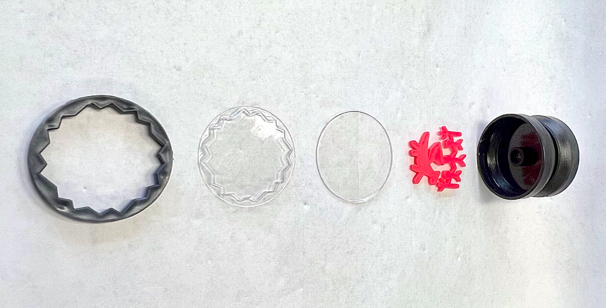

Assembly architecture
The finished yo-yo combined injection-molded, thermoformed, and punched plastic parts. The main body had to support the outer decorative assembly while also accommodating the axle hardware and the press-fit interface used in the final design.
Exploded view of the five main yo-yo components.